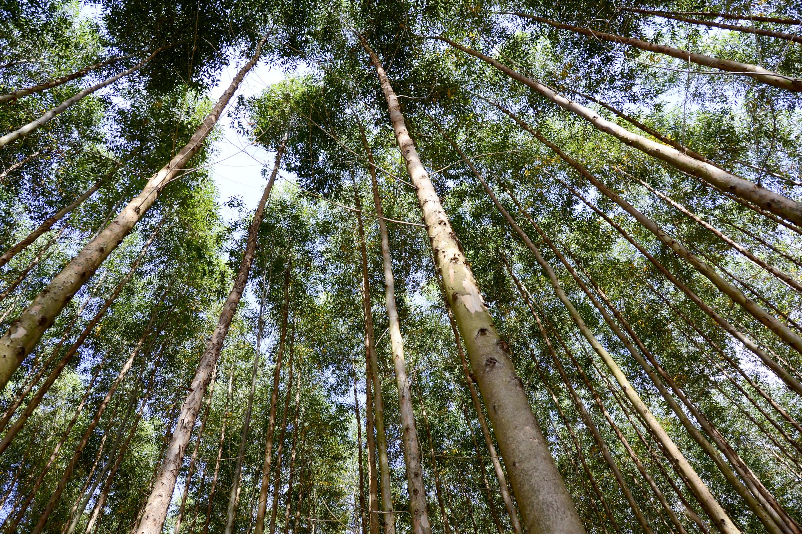

SAVE TREES. SAVE EARTH Blog

Trees have helped us live by producing oxygen everywhere. The more trees there are in this world, the more oxygen we get to live.
Trees are the air purifiers of Earth. Except that there are trillions of them. They take in sunlight, carbon-dioxide and water to create oxygen. This process is called photosynthesis.
Trees are the reason why all animals and humans are here today.
The amount of trees in this world is more than the amount of stars there are in our own Galaxy. Around 10 times more.

Deforestation has made animals' habitats destroyed and now they are struggling to survive. Billions of trees are being cut down each year.
But the government has made a law not to cut down trees and whoever does that will be punished. We need to replant Earth and change it to its normal and green Earth so that if somebody cuts trees down, Earth will replant and punish the wrong doers for cutting it down.